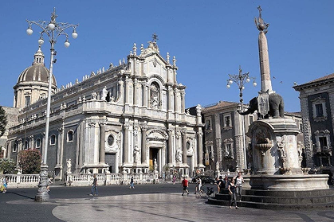
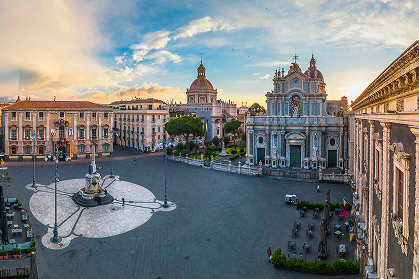
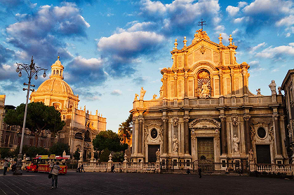
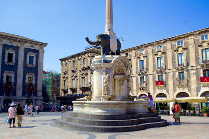
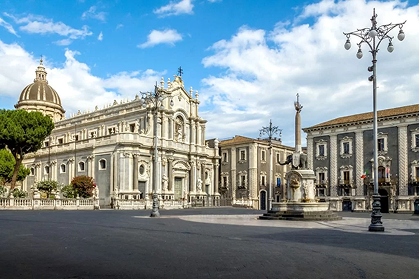
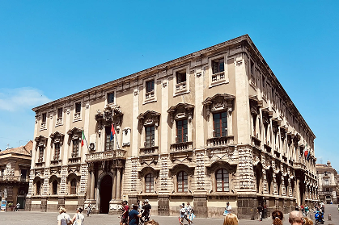

Le piazze siciliane

La Piazza del Duomo è il centro simbolico di Catania. Qui sorge la Cattedrale di Sant’Agata, costruita nel XI secolo e più volte ricostruita dopo eruzioni e terremoti. All’interno della cattedrale si trovano le reliquie di Sant’Agata, mete di pellegrinaggio. Le cappelle laterali, i monumenti funerari e la tomba del celebre compositore Vincenzo Bellini rendono la visita un percorso tra fede, arte e storia. La piazza ospita anche la celebre Fontana dell’Elefante, simbolo della città: un obelisco sorretto da una statua vulcanica di elefante, conosciuta come u Liotru, protagonista di miti e leggende locali.





